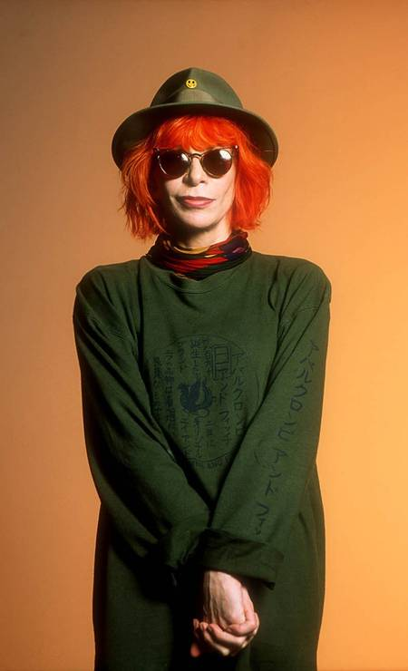

|

|
SobreRita Lee (1947) é uma cantora e compositora brasileira. Considerada uma das maiores representantes do Rock no Brasil, ocupa hoje um espaço único no universo da música popular brasileira. Rita Lee Jones nasceu em São Paulo no dia 31 de dezembro de 1947. Filha do dentista Charles Fenley Jones, um imigrante americano, e da pianista Romilda Pádua Jones, começou a tocar bateria com quinze anos de idade em 1966, junto com os irmãos, Sérgio e Arnaldo Baptista, Rita formou a banda "Os Mutantes".Os MutantesEm 1967, a banda se destacou ao acompanhar o cantor Gilberto Gil na apresentação da música Domingo no Parque, que ficou em segundo lugar no III Festival da Música Popular Brasileira.Em 1968, Os Mutantes acompanhou o cantor Caetano Veloso na apresentação da música É Proibido Proibir, no Festival Internacional da Canção (FIC). Nesse mesmo ano, a banda assinou contrato com a gravadora Polidor que lançou o primeiro disco do grupo, intitulado: “Os Mutantes”. O grupo tornou-se um grande nome do rock de vanguarda da música brasileira. Participou do disco-manifesto Tropicália ou Panis et Circensis e dos discos de Gilberto Gil e Caetano Veloso em 1968.Carreira SoloEm 1970, acompanhada dos Mutantes, Rita gravou seu primeiro disco solo, Build Up. Nesse mesmo ano foi afastada do grupo.Em 1972, Rita Lee lançou Hoje é o Primeiro Dia do Resto da Sua Vida. Em seguida lançou Atrás do Porto Tem Uma Cidade (1974) e Fruto Proibido (1975), que vendeu cerca de 700 mil cópias.Em 1976 lançou Refestança, que fez sucesso com a música Ovelha Negra, que ocupou a primeira posição nas paradas. Em 1977, o disco Entradas e Bandeiras foi certificado com o disco de platina duplo.Rita Lee e Roberto de CarvalhoAinda em 1977 Rita Lee conheceu o músico Roberto de Carvalho e iniciou uma parceria musical e amorosa. Lançou Babilônia (1978) que fez sucesso com as músicas Miss Brasil 2000 e Disco Voador. Nos anos 80, Rita Lee seguiu um caminho mais ligado ao Pop, criando canções populares e menos experimentais comparadas aos tempos da banda Os Mutantes. Foram destaques as músicas Baila Comigo, Lança Perfume, Caso Sério, Bem-me-quer, Nem Luxo Nem Lixo, Banho de Espuma, Cor de Rosa Choque, Flagra, Desculpa o Auê, Paga Rapaz, entre outras. Nos anos 90, seu maior sucesso foi o Acústico MTV. Na década seguinte, lançou o disco 3001 que fez sucesso com a música Erva Venenosa. O CD Balacobaco, lançado em 2003, superou as expectativas de vendas e teve repercussão positiva junto à crítica. O CD foi indicado ao Grammy Latino na categoria de Melhor Disco Pop Contemporâneo. Depois de alguns anos sem gravar, em 2012, Rita Lee lançou o álbum Reza. Rita Lee, além dos inúmeros sucessos que compôs para seus discos, teve músicas gravadas por artistas como Caetano Veloso, Gilberto Gil, João Gilberto, Elis Regina, entre muitos outros cantores.Família e doençaRita Lee está casada com Roberto de Carvalho desde 1996 e juntos têm três filhos: Beto Lee, Antônio Lee e João Lee. Em 2014, Rita decidiu deixar de pintar os cabelos com o tom vermelho que marcou sua imagem durante toda sua carreira, e assumiu os fios brancos. Em 2016, lançou sua autobiografia. Em maio de 2021, Rita Lee foi diagnosticada com um câncer primário no pulmão esquerdo e desde então se submeteu a um tratamento de imunoterapia e radioterapia. Em abril de 2022, foi anunciado que a cantora estava curada da doença. No dia 24 de fevereiro de 2023, Rita foi internada no Hospital Albert Einstein bastante debilitada, com um quadro de desnutrição. |